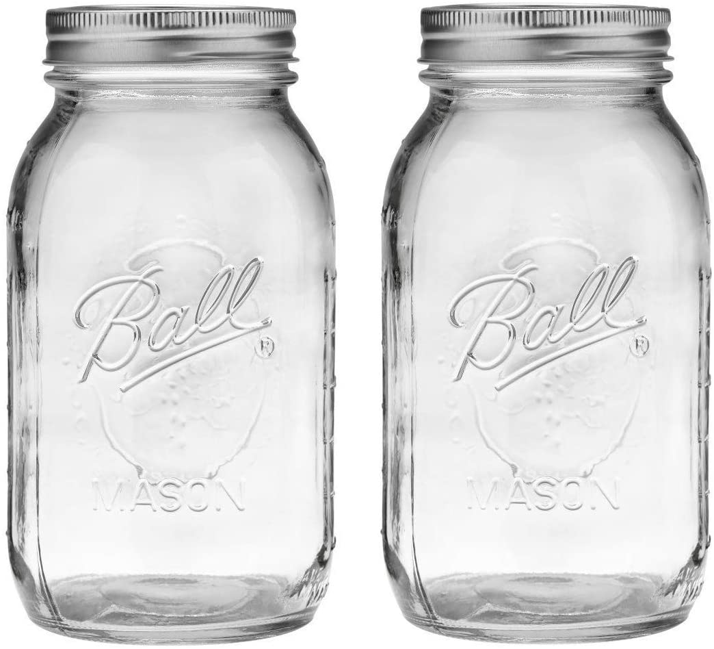
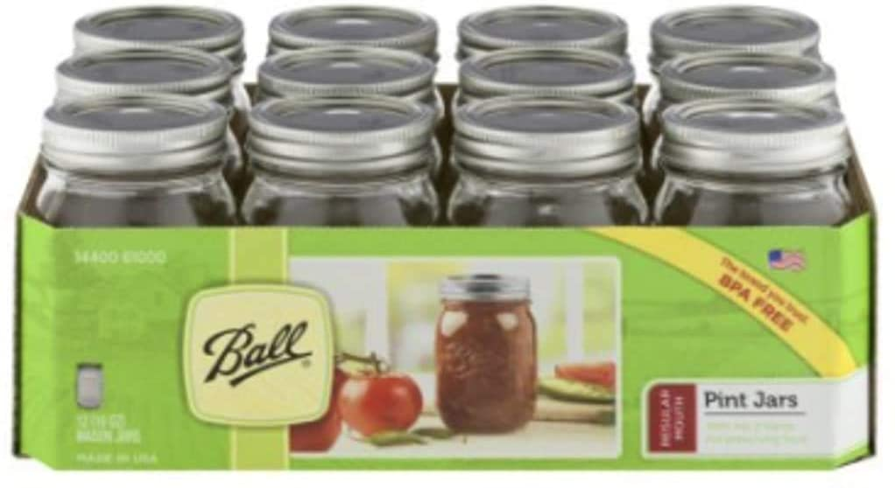

Ball Regular Mouth 32-Ounces Mason Jar with Lids and Bands (2-Units), Pack Of 2, Clear
- 2-Regular mouth glass preserving mason jars. 2-Regular mouth lids. 2-Regular mouth bands.
- Ideal for sliced fruits and vegetables, pickles, tomato-based juices, and sauces.
- These jars are BPA-free
- New and improved sure tight lids
- Helps keep canned food sealed now for up to 18-months

12 Ball Mason Jar with Lid - Regular Mouth - 16 oz by Jarden (Packs of 12)
- Ideal for fresh preserving recipes such as salsas, syrups, sauces, fruits & vegetables
- Ideal for sliced fruits and vegetables, pickles, tomato-based juices, and sauces.
- These jars are BPA-free
- New and improved sure tight lids
- Helps keep canned food sealed now for up to 18-months
